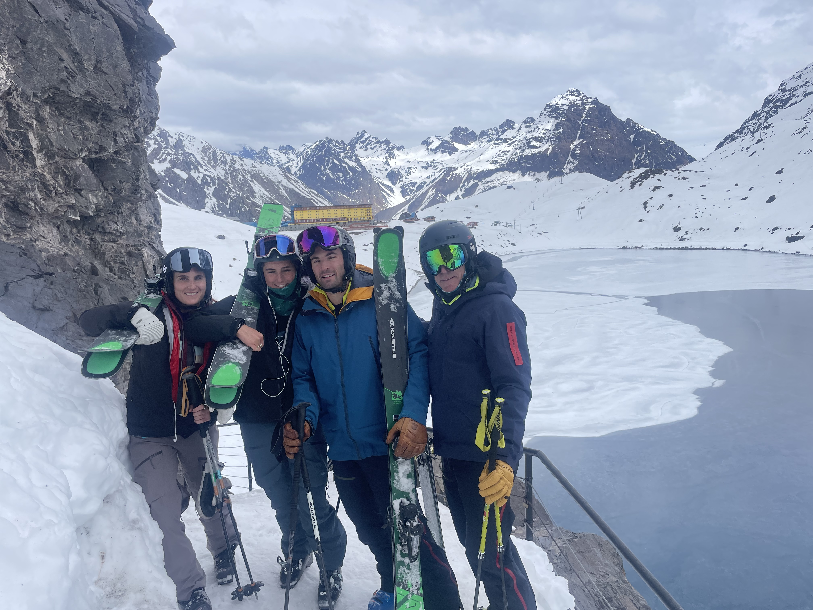
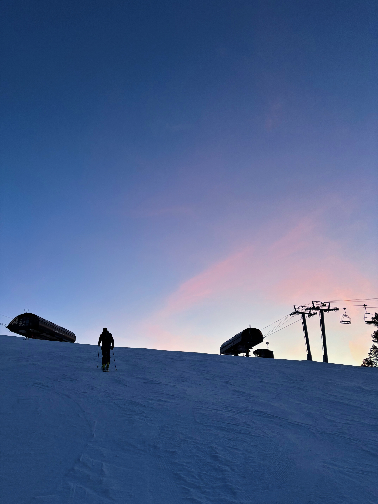

Trips
Growing up in a veyr big ski family I have been lucky enough to travel to some very cool places. Skiing in Chile has been one of my favorite experinces. I have been to portillo Chile four summers now, and its always my favoirte week of the year. My whole family goes down and we get to spend a week in one of the most infamous ski places in the world. The hotel is overlooking a gorgeous lake with some of the best sunets ive ever seen. 
Tips
As someone who has grown up skiings I have recived so many tips on hwo to succeded as a skiier. Obviosuly the only way to get beter is to get out there. Being on the mountain its so important to push youself and trust that you know what your doing. Something that has really helped me be a better skier is doing uphill training. Uphill- otherwise called skiing has been something I have started doing recently. It is such a great workout and such a goodway to get on the mountain. 
Travel
I love traveling with my family so much. Getting to see osme of the coolest places in the world has been so cool. Going sking in South America has exposed me to some of the coolest cultures a food. One place I have been dying to go to is Japan. My parents have been and seeing their experiences has made it a dream destination.